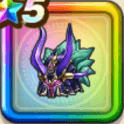

闇竜のかぶと
攻略班 9.5点 / けもの系への耐性+5%怪人系への耐性+5%けもの系への耐性+5%悪魔系への耐性+5%大海の浪漫の斬撃・体技・ブレスダメージ+15%【ニンジャ】ブレスダメージ+4%ヒャド属性ダメージ+9%ドルマ属性ブレスダメージ+9%【ニンジャ】スキルの斬撃ダメージ+6%
くわしい特徴
【レベル別習得スキル】 Lv1けもの系への耐性+5% Lv3大海の浪漫の斬撃・体技・ブレスダメージ+15% Lv5きようさ+10 Lv8怪人系への耐性+5% Lv8【ニンジャ】ブレスダメージ+4% Lv10ヒャド属性ダメージ+9% Lv12ドルマ属性ブレスダメージ+9% Lv15【ニンジャ】スキルの斬撃ダメージ+6% Lv18けもの系への耐性+5% Lv20すばやさ+6 Lv23悪魔系への耐性+5% Lv25守備力+5 【限界突破スキル】 1凸攻撃力+10 2凸すばやさ+12 3凸守備力+10 4凸さいだいHP+12